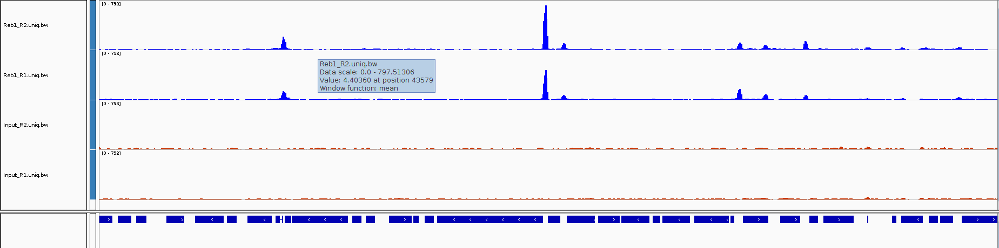

Visually inspecting data via a genome browser is often the first step in any analysis. Has the sequencing worked as expected? Are there noticeable differences between my samples by eye? BAM files are typically large and contain detailed information for every read, thus they are slow to access and view on a genome browser. If we are only interested in read profiles we can convert our BAM files to graphs of sequencing depth per base. The wiggle file format has three columns to represent a genomic interval and a 4th as a score which will represent the number of reads overlapping that region. We will create a compressed version of this format called bigWig for use with genome browsers. To do this we are going to use the deepTools package which has a lot of useful tools particularly for ChIP-seq analysis.
The bamCoverage tool in deepTools has many different options for normalising, smoothing and filtering your BAM files before converting to bigWig and the documentation is worth a read.
cat samples.txt | parallel -j 4 "bamCoverage -bs 1 --normalizeUsing BPM -e 200 -b bwa_out/{}/{}.uniq.bam --outFileName bwa_out/{}/{}.uniq.bw"Putting all of your commands into a script is good practice for keeping track of your analyses and for reproducibility. We want to write scripts so they can be used again on different datasets and avoid hardcoding the names of files.
We now have our alignments (BAM) and visualisation files (bigWig) and this is normally a branching point for downstream analyses that quantify and annotate the data.
Here is a pipeline containing everything we have run so far; pipeline.sh
Looking at this pipeline script you’ll notice we are not running parallel every time we run a command, instead we launch the script using parallel and the sample names are passed using the special ‘$1’ bash variable. This is more efficient as the samples will run through each command independently.
Using this we can re-run everything from start to end in one go.
mkdir CS_workshop_tmp #Create a temporary directory
cd CS_workshop_tmp #Move into that directory
cp /homes/library/training/ChIP-seq_workshop/pipeline.sh . # Copy the pipeline into the new directory
cp ../samples.txt . #Copy the samples file
nohup cat samples.txt | parallel -j 4 bash pipeline.sh {} > pipeline.log & #Run the shell script (See Below)
cd .. #Move back to the main directoryYou can keep track of your pipeline by using ps or looking at the log file.
ps f
tail CS_workshop_tmp/pipeline.log # Shows the end of a fileNote any commands run on multiple samples will need be to run separately (after pipeline finished)
multiqc CS_workshop_tmp/fastq -o CS_workshop_tmp/fastqFiles are large, disk space is expensive, remove any unwanted or temporary files from your folder. We should always keep the raw data (fastq) and our final processed datasets (BAM, bigWig etc) and the script we used to generate them. SAM files are large and should be removed once converted to BAM.
rm fastq/*trim*fq.gz #Remove trimmed fastq temp files
rm bwa_out/*/*.sam #Remove sam filesIGV (Integrative genomics viewer) is a powerful genome browser from the Broad institute. It is perfect for viewing your sequencing files as loading data is easy, common formats are understood, views are customisable and navigation is quick.
First let’s put all of our visualisation files in one folder.
mkdir visualisation
ln -s $PWD/bwa_out/*/*bw visualisation
ln -s $PWD/bwa_out/*/*uniq.bam* visualisationIt is best to download the desktop app for use on your own machine but if you are using a university managed computer you can access the web app at https://igv.org/app/.
Open IGV and set the genome to sacCer3, then find your visualisation folder online. In the desktop version you can drag and drop files into IGV. If you are using the webapp you will need to download the files you require and open them using the tracks menu.
Open a BAM file and a corresponding bigWig file into IGV. Make sure the .bai index file is in the same folder as the BAM.

First, let’s navigate the chromosome:
Now let’s customise our view:
DESKTOP APP
WEB APP
One BAM vs bigWig
Why are the coverage profiles different?
Which format is faster to view?
Can you identify mismatches in read alignment?
What other information do the BAM files give us?
Now let’s load all our bigwig files
Can you identify peaks in the ChIP samples
Do you see any peaks that are also present in the Input?